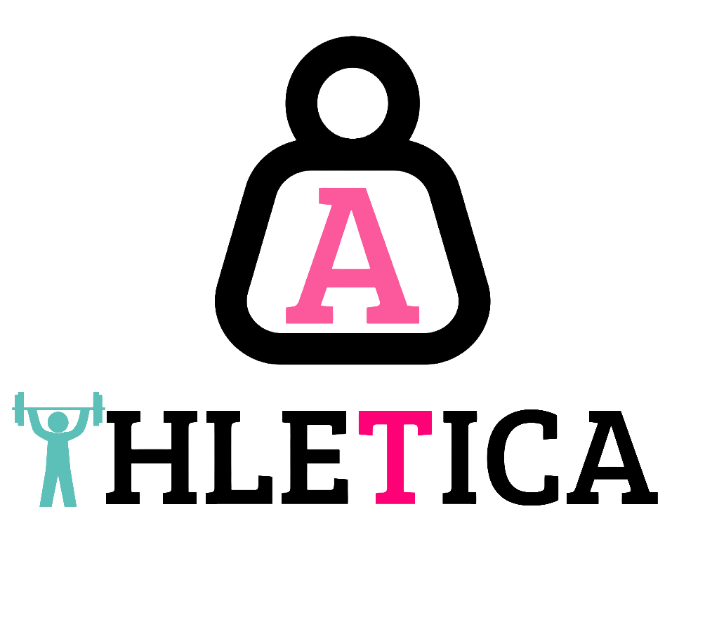
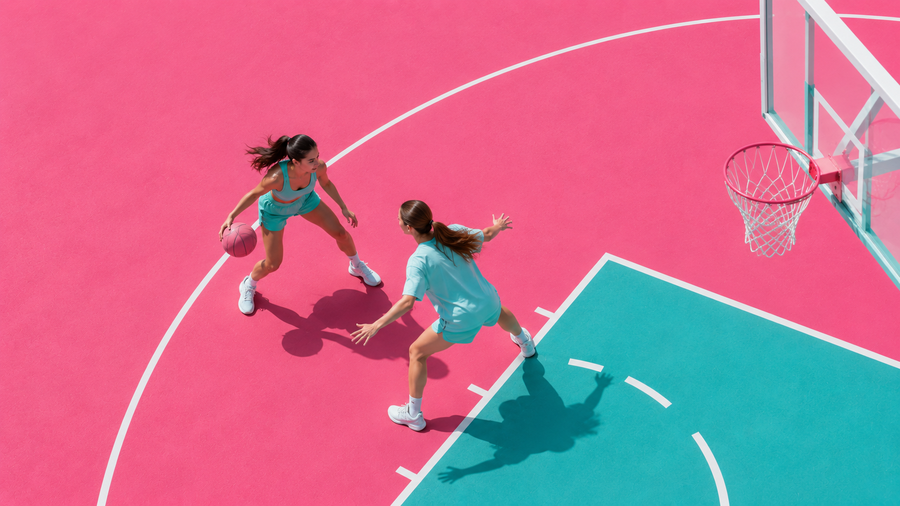

Télécharger l'appli
Athletica facilite également l'accès aux lieux de pratique sportive grâce à son espace dédié aux infrastructures sportives. Les utilisatrices peuvent découvrir, comparer et réserver des gymnases, terrains ou espaces adaptés à leurs besoins afin de pratiquer leur activité dans un cadre confortable et rassurant. L'application propose les différents lieux disponibles autour d'elles ainsi que les créneaux les plus avantageux, en mettant en avant les horaires où les réservations sont les moins coûteuses. Cette fonctionnalité permet de rendre le sport plus accessible en simplifiant l'organisation des séances et en réduisant les obstacles liés au manque d'espace ou aux contraintes financières. Athletica accompagne ainsi les jeunes filles dans leur pratique sportive en leur offrant des solutions adaptées, flexibles et faciles d'accès. Elles peuvent aussi garder le compte de leur séances et humeur sur l'application partenaire Flowy!